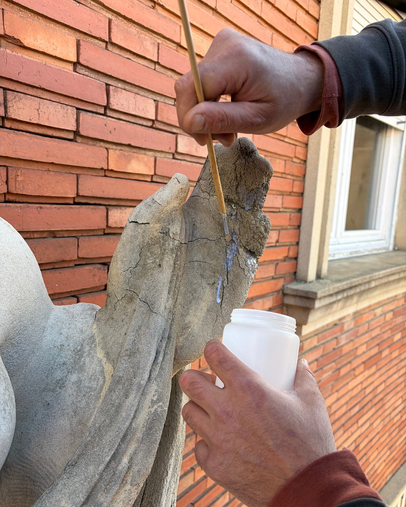

Un equipo de Terrassa con oficio para lo fino
Lamper Soluciones de Acabado es la división de revestimientos y acabados de Lamper Instalaciones y Mantenimiento. Al frente hay un profesional con más de 21 años de oficio en revestimientos, acabados y tratamientos de superficies, que empezó en obras de edificios históricos.

De los edificios históricos a la obra de cada día
Nuestro responsable técnico aprendió el oficio en obras de edificios históricos. Esa forma de mirar una superficie es la que hoy aplicamos a una fachada, a un suelo de nave o a un salón.
- Formación
Técnico superior en Artes Aplicadas al Muro
Ciclo formativo de grado superior centrado en las técnicas murales: revocos, esgrafiados, estucos y pintura mural.
- Edificios históricos
Seis años en RosArt
Empresa especializada en edificios históricos. Allí se aprende a entender un material antes de tocarlo y a intervenir lo justo. En la Fonda España de Barcelona, en 2008, fue el encargado de obra de la empresa especializada.
- Docencia
Profesor de dibujo
En 2008 dio clases de dibujo en una academia privada de Barcelona. El dibujo es la base para reponer un motivo perdido o trazar una pintura mural.
- Obra
Más de 21 años en acabados
Revestimientos, acabados y tratamientos de superficies en edificios históricos, interiores e industria: de la Rambla de Catalunya a las naves de Hune o la Catedral de Terrassa.
- Hoy
Lamper Soluciones de Acabado
La división de acabados de Lamper Instalaciones y Mantenimiento, con sede en Terrassa y obras en Barcelona y el resto de Cataluña.

Lo que los edificios históricos nos enseñaron
Primero se entiende la superficie
Antes de elegir un producto miramos de qué está hecho el soporte, cómo se comporta y por qué ha fallado. Un acabado bueno sobre un soporte mal entendido vuelve a fallar.
Preparar es la mitad del trabajo
Limpiar, sanear, reparar e imprimar no se ve en la foto final, pero es lo que decide cuánto dura. No nos lo saltamos para ganar un día.
Material compatible, no el más fuerte
En un muro antiguo, un mortero más duro o una pintura que no transpira acaban dañando lo que querían proteger. Elegimos el material que trabaja con el soporte, no contra él.
Ni más ni menos de lo que hace falta
Te recomendamos lo que tu superficie necesita. Si basta con reparar una zona, no te proponemos rehacerlo todo.
Una división de Lamper Instalaciones y Mantenimiento
Formamos parte de una empresa de instalaciones y mantenimiento. Si tu obra necesita también electricidad u otras instalaciones, tienes un solo interlocutor y un solo calendario, sin que un gremio estropee el trabajo del anterior.
Los datos de la empresa, por si tienes que incluirnos en una propuesta o un expediente (también en el dossier de empresa en PDF):
- Nombre comercial
- Lamper Soluciones de Acabado
- Razón social
- Lamper Instalaciones y Mantenimiento SL
- NIF
- B75522136
- Registro
- Registro Mercantil de Barcelona, tomo 100043780
- Sede
- Calle de Núria, 97, local · 08224 Terrassa (Barcelona)
- Ámbito
- Terrassa, Barcelona y Cataluña
- Contacto
- info@lamper.es · 680 42 72 61
- Web principal
- www.lamper.es
Marcas que conocemos bien
No vendemos una marca: elegimos el sistema según el soporte y el uso. Estos son los fabricantes con los que trabajamos habitualmente.
- Keim
- Pinturas minerales al silicato para fachadas. Se unen al soporte mineral y lo dejan transpirar: por eso las usamos en edificios antiguos. Fachadas históricas · fachadas de comunidades.
- Isaval
- Pintura epoxi para suelos de naves, almacenes y locales. Pavimentos de epoxi y poliuretano.
- Jotun
- Pinturas plásticas para interiores y paramentos donde no hace falta un acabado mineral. Comunidades y fachadas.
- Mamper
- Impermeabilización con poliuretano líquido 100 %: una membrana continua, sin solapes, para cubiertas y terrazas. Cubiertas de nave · terrazas y cubiertas.
Contamos lo que hemos hecho, y cómo
Una web de acabados se juzga por sus fotos y sus obras. Por eso nos ponemos tres reglas.
- Obras con su papel
- Cada obra dice qué hicimos y cuándo. Cuando nuestro equipo trabajó dentro de otra empresa, como en la Fonda España, lo decimos así: «nuestro equipo ha participado».
- Fotos propias, sin atribuir de más
- Solo publicamos fotos de nuestro trabajo, sin caras ni matrículas. Las que aún no hemos identificado con una obra concreta van al archivo, no a una ficha que no les corresponde.
- Sin cifras de escaparate
- No publicamos reseñas, sellos ni números que no podamos enseñar. Si quieres referencias de una obra, pídenoslas y te diremos qué podemos mostrarte.
Hablemos de tu superficie
Escríbenos con lo que tengas: unas fotos, unos planos o dos líneas sobre el problema. Estamos en la calle de Núria, 97, en Terrassa.